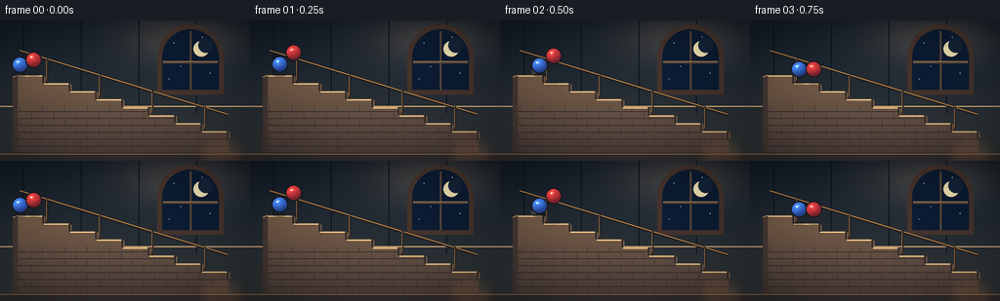
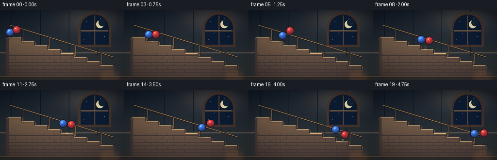
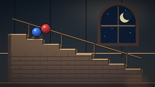
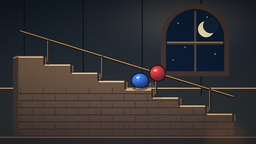
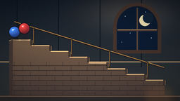

CODING AGENTS AS PIXEL WORLD MODELS
traex/DeepSeek-V4.1-Flash · instance_preservation_0022
点击播放 · 原生 RGB 像素
逐轮保存的候选
回放视频、检查图与代码变化。
每份候选均可单独播放。实际图片检查记录在下方工具轨迹中。
候选 01播放与检查图
点击播放 · 原生 RGB 像素

展开代码变化
--- 上一保存版本
+++ 本次保存版本
@@ -0,0 +1,404 @@
+from pathlib import Path
+import math
+
+import numpy as np
+from PIL import Image, ImageDraw, ImageFilter
+
+import artifact_io
+
+
+W, H = 256, 144
+N, FPS = 20, 4.0
+S = 4 # Supersampling factor for clean edges and soft light.
+
+# Stair geometry, in output pixels.
+X0, Y0 = 18.0, 56.0
+STEP_W, RISE, N_STEPS = 27.0, 8.2, 8
+X_END = X0 + STEP_W * N_STEPS
+Y_END = Y0 + RISE * N_STEPS
+BALL_R = 7.4
+
+
+def px(value):
+ return int(round(value * S))
+
+
+def box(x0, y0, x1, y1):
+ return (px(x0), px(y0), px(x1), px(y1))
+
+
+def point(x, y):
+ return (px(x), px(y))
+
+
+def line(draw, coords, fill, width=1.0):
+ draw.line([point(x, y) for x, y in coords], fill=fill, width=max(1, px(width)), joint="curve")
+
+
+def floor_at(x):
+ if x <= X0:
+ return Y0
+ if x >= X_END:
+ return Y_END
+ index = min(N_STEPS - 1, int((x - X0) / STEP_W))
+ return Y0 + index * RISE
+
+
+def make_background():
+ width, height = W * S, H * S
+ yy = np.linspace(0.0, 1.0, height, dtype=np.float32)[:, None]
+ xx = np.linspace(0.0, 1.0, width, dtype=np.float32)[None, :]
+
+ top = np.array([19, 29, 42], dtype=np.float32)
+ bottom = np.array([52, 56, 57], dtype=np.float32)
+ rgb = np.broadcast_to(
+ top[None, None, :] * (1.0 - yy[..., None]) + bottom[None, None, :] * yy[..., None],
+ (height, width, 3),
+ ).copy()
+
+ # Warm lamp glow washing across the upper stairwell.
+ gx, gy = 0.72, 0.12
+ dist2 = ((xx - gx) * 1.15) ** 2 + ((yy - gy) * 1.65) ** 2
+ glow = np.exp(-dist2 / 0.095).astype(np.float32)
+ glow_color = np.array([255.0, 178.0, 91.0], dtype=np.float32)
+ rgb += glow[..., None] * glow_color[None, None, :] * 0.15
+
+ # Faint cool light from the arched window.
+ wx, wy = 0.76, 0.22
+ wdist = ((xx - wx) * 1.4) ** 2 + ((yy - wy) * 1.8) ** 2
+ cool = np.exp(-wdist / 0.06).astype(np.float32)
+ rgb += cool[..., None] * np.array([53.0, 91.0, 128.0], dtype=np.float32)[None, None, :] * 0.12
+
+ grain = np.random.default_rng(11).normal(0.0, 2.1, (height, width, 1)).astype(np.float32)
+ rgb = np.clip(rgb + grain, 0, 255).astype(np.uint8)
+ image = Image.fromarray(rgb, "RGB")
+ draw = ImageDraw.Draw(image)
+
+ # Subtle plaster panel seams.
+ for x in (24, 83, 142, 201):
+ line(draw, [(x, 0), (x, 95)], (9, 18, 28, 55), 1.0)
+ line(draw, [(0, 88), (W, 88)], (236, 183, 123, 18), 1.0)
+
+ # Arched night window.
+ outer = (161, 5, 229, 76)
+ inner = (166, 10, 224, 71)
+ draw.pieslice(box(161, 4, 229, 72), 180, 360, fill=(67, 50, 43))
+ draw.rectangle(box(161, 38, 229, 76), fill=(67, 50, 43))
+ draw.pieslice(box(166, 9, 224, 67), 180, 360, fill=(12, 27, 49))
+ draw.rectangle(box(166, 38, 224, 71), fill=(12, 27, 49))
+
+ # Window stars and moon.
+ for sx, sy, radius, color in (
+ (178, 23, 0.55, (143, 181, 214)),
+ (185, 47, 0.45, (116, 158, 195)),
+ (215, 54, 0.6, (167, 193, 218)),
+ (173, 60, 0.4, (102, 144, 180)),
+ (207, 17, 0.45, (155, 187, 211)),
+ ):
+ draw.ellipse(box(sx - radius, sy - radius, sx + radius, sy + radius), fill=color)
+ draw.ellipse(box(198, 21, 214, 37), fill=(234, 220, 173))
+ draw.ellipse(box(203, 18, 218, 33), fill=(19, 35, 55))
+
+ # Window crossbars.
+ line(draw, [(195, 11), (195, 71)], (86, 68, 56), 2.1)
+ line(draw, [(167, 43), (223, 43)], (86, 68, 56), 2.1)
+ line(draw, [(167, 42), (223, 42)], (179, 137, 89, 60), 0.7)
+
+ # Stone stair silhouette.
+ profile = [(X0, Y0)]
+ for i in range(N_STEPS):
+ x_next = X0 + (i + 1) * STEP_W
+ y_current = Y0 + i * RISE
+ y_next = Y0 + (i + 1) * RISE
+ profile.extend([(x_next, y_current), (x_next, y_next)])
+ profile.extend([(X_END, H + 4), (X0, H + 4)])
+
+ stair_mask = Image.new("L", image.size, 0)
+ mask_draw = ImageDraw.Draw(stair_mask)
+ mask_draw.polygon([point(x, y) for x, y in profile], fill=255)
+
+ stair_h = np.linspace(0.0, 1.0, height, dtype=np.float32)[:, None, None]
+ stone_top = np.array([143, 111, 78], dtype=np.float32)
+ stone_bottom = np.array([72, 59, 57], dtype=np.float32)
+ stone = stone_top * (1.0 - stair_h) + stone_bottom * stair_h
+ stone = np.broadcast_to(stone, (height, width, 3)).copy()
+ stone += np.random.default_rng(23).normal(0, 3.2, (height, width, 1)).astype(np.float32)
+ stone = np.clip(stone, 0, 255).astype(np.uint8)
+ stair_texture = Image.fromarray(stone, "RGB")
+ stair_draw = ImageDraw.Draw(stair_texture)
+
+ # Individual stone courses, clipped later by the stair silhouette.
+ for row in range(4, 16):
+ y = 65.0 + row * 7.1
+ line(stair_draw, [(13, y), (244, y)], (46, 42, 43, 72), 0.65)
+ offset = 9 if row % 2 else 20
+ for x in np.arange(offset, 245, 23):
+ line(stair_draw, [(x, y - 5.5), (x, y + 1.0)], (53, 45, 44, 68), 0.55)
+
+ image.paste(stair_texture, (0, 0), stair_mask)
+ draw = ImageDraw.Draw(image)
+
+ # Broad light falling on the treads.
+ light = Image.new("RGBA", image.size, (0, 0, 0, 0))
+ light_draw = ImageDraw.Draw(light)
+ for i in range(N_STEPS):
+ x_a = X0 + i * STEP_W
+ x_b = x_a + STEP_W
+ y = Y0 + i * RISE
+ strength = max(0.25, 1.0 - i / 9.0)
+ light_draw.polygon(
+ [point(x_a, y), point(x_b, y), point(x_b, y + 3.2), point(x_a, y + 3.2)],
+ fill=(255, 216, 157, int(45 * strength)),
+ )
+ light = light.filter(ImageFilter.GaussianBlur(px(1.2)))
+ image = Image.alpha_composite(image.convert("RGBA"), light).convert("RGB")
+ draw = ImageDraw.Draw(image)
+
+ # Crisp step lips, risers, and chips.
+ rng = np.random.default_rng(31)
+ for i in range(N_STEPS):
+ x_a = X0 + i * STEP_W
+ x_b = x_a + STEP_W
+ y = Y0 + i * RISE
+ line(draw, [(x_a, y + 0.9), (x_b, y + 0.9)], (235, 196, 137), 1.25)
+ line(draw, [(x_a, y + 2.2), (x_b, y + 2.2)], (92, 69, 57), 0.65)
+ line(draw, [(x_b - 0.7, y), (x_b - 0.7, y + RISE)], (53, 45, 43), 2.2)
+ line(draw, [(x_b + 0.7, y + 1.2), (x_b + 0.7, y + RISE - 0.8)], (164, 121, 84), 0.7)
+ for _ in range(3):
+ chip_x = x_a + rng.uniform(4, STEP_W - 3)
+ chip_y = y + rng.uniform(1.2, 2.1)
+ draw.point(point(chip_x, chip_y), fill=(255, 220, 165))
+
+ # Left stair cheek and bottom foreground.
+ draw.polygon(
+ [point(13, 58), point(18, 56), point(18, H), point(13, H)],
+ fill=(68, 55, 51),
+ )
+ line(draw, [(13, 58), (18, 56)], (171, 128, 88), 1.2)
+ draw.rectangle(box(0, 137, W, H), fill=(49, 45, 46))
+ line(draw, [(0, 137), (W, 137)], (136, 103, 77), 1.0)
+
+ # Sloping brass handrail, behind the moving balls.
+ rail_start = (X0 + 2, Y0 - 25)
+ rail_end = (X_END - 1, Y_END - 25)
+ line(draw, [rail_start, rail_end], (33, 30, 32), 3.1)
+ line(draw, [(rail_start[0], rail_start[1] - 0.6), (rail_end[0], rail_end[1] - 0.6)],
+ (204, 147, 79), 1.05)
+ for x_post in (48, 102, 156, 210):
+ stair_y = floor_at(x_post)
+ rail_y = rail_start[1] + (x_post - rail_start[0]) * (RISE / STEP_W)
+ line(draw, [(x_post, rail_y), (x_post, stair_y - 1)], (34, 31, 33), 2.0)
+ line(draw, [(x_post - 0.5, rail_y + 1), (x_post - 0.5, stair_y - 2)], (160, 111, 62), 0.7)
+ draw.ellipse(box(x_post - 2.0, stair_y - 3.1, x_post + 2.0, stair_y + 0.2),
+ fill=(52, 44, 41))
+
+ # A few soft dust motes in the warm light.
+ mote = Image.new("RGBA", image.size, (0, 0, 0, 0))
+ mote_draw = ImageDraw.Draw(mote)
+ for mx, my, radius, alpha in (
+ (92, 31, 0.55, 70), (118, 54, 0.4, 48), (145, 22, 0.45, 55),
+ (73, 71, 0.5, 40), (181, 82, 0.4, 44), (35, 91, 0.35, 36),
+ ):
+ mote_draw.ellipse(box(mx - radius, my - radius, mx + radius, my + radius),
+ fill=(255, 220, 169, alpha))
+ mote = mote.filter(ImageFilter.GaussianBlur(px(0.45)))
+ image = Image.alpha_composite(image.convert("RGBA"), mote).convert("RGB")
+
+ # Gentle vignette.
+ arr = np.asarray(image, dtype=np.float32)
+ vx = np.linspace(-1.0, 1.0, width, dtype=np.float32)[None, :]
+ vy = np.linspace(-1.0, 1.0, height, dtype=np.float32)[:, None]
+ vignette = np.clip(1.06 - 0.20 * (vx * vx + vy * vy), 0.72, 1.06)
+ arr *= vignette[..., None]
+ return Image.fromarray(np.clip(arr, 0, 255).astype(np.uint8), "RGB")
+
+
+def simulate_ball(name, x, y, vx, vy):
+ dt = 1.0 / 480.0
+ time = 0.0
+ states = []
+ collisions = []
+ next_sample = 0.0
+ restitution = 0.78 if name == "red" else 0.72
+ gravity = 172.0
+
+ while time <= (N - 1) / FPS + 1e-7:
+ if time + 1e-9 >= next_sample:
+ states.append({
+ "t": time,
+ "x": x,
+ "y": y,
+ "vx": vx,
+ "vy": vy,
+ })
+ next_sample += 1.0 / FPS
+
+ vy += gravity * dt
+ x += vx * dt
+ y += vy * dt
+ floor_y = floor_at(x)
+ center_limit = floor_y - BALL_R
+ if y >= center_limit and vy > 0:
+ impact_speed = vy
+ y = center_limit
+ vy = -impact_speed * restitution
+ if impact_speed > 10:
+ collisions.append({
+ "t": time,
+ "x": x,
+ "y": floor_y,
+ "strength": min(1.0, impact_speed / 72.0),
+ })
+ time += dt
+
+ return states, collisions
+
+
+def render_ball(cx, cy, radius, squash, palette, rotation):
+ rx = radius * (1.0 + 0.16 * squash)
+ ry = radius * (1.0 - 0.13 * squash)
+ margin = 1.35
+ size = int(math.ceil((max(rx, ry) + margin) * 2.0 * S))
+ coords = (np.arange(size, dtype=np.float32) + 0.5 - size / 2.0) / S
+ dx = coords[None, :]
+ dy = coords[:, None]
+ q = (dx / rx) ** 2 + (dy / ry) ** 2
+
+ base = np.array(palette["base"], dtype=np.float32)
+ dark = np.array(palette["dark"], dtype=np.float32)
+ light = np.array(palette["light"], dtype=np.float32)
+
+ nx = dx / max(rx, 0.001)
+ ny = dy / max(ry, 0.001)
+ nz = np.sqrt(np.clip(1.0 - nx * nx - ny * ny, 0.0, 1.0))
+ diffuse = np.clip((-0.46 * nx - 0.58 * ny + 0.67 * nz), 0.0, 1.0)
+ shade = np.clip(0.28 + 0.78 * diffuse, 0.0, 1.0)
+ color = dark[None, None, :] * (1.0 - shade[..., None]) + base[None, None, :] * shade[..., None]
+ color = color * (1.0 - 0.20 * np.clip(ny, 0.0, 1.0)[..., None])
+
+ # A small rotating glossy patch gives each solid ball a readable spin.
+ patch_x = dx + 0.22 * radius
+ patch_y = dy + 0.31 * radius
+ pxr = patch_x * math.cos(rotation) - patch_y * math.sin(rotation)
+ pyr = patch_x * math.sin(rotation) + patch_y * math.cos(rotation)
+ band = np.exp(-((pxr / (0.16 * radius)) ** 2 + (pyr / (0.48 * radius)) ** 2))
+ color += light[None, None, :] * band[..., None] * 0.13
+
+ spec = np.exp(-(((dx + 0.32 * radius) / (0.15 * radius)) ** 2
+ + ((dy + 0.40 * radius) / (0.12 * radius)) ** 2))
+ spec2 = np.exp(-(((dx + 0.05 * radius) / (0.075 * radius)) ** 2
+ + ((dy + 0.52 * radius) / (0.065 * radius)) ** 2))
+ color += np.array([255.0, 248.0, 224.0])[None, None, :] * (0.88 * spec + 0.42 * spec2)[..., None]
+
+ alpha = np.zeros_like(q, dtype=np.float32)
+ inside = q <= 1.0
+ outline_outer = q <= ((radius + 1.05) / radius) ** 2
+ alpha[inside] = 255.0
+ outline_color = np.array([21, 20, 27], dtype=np.float32)
+ color[~inside] = outline_color
+ alpha[outline_outer & ~inside] = 235.0
+ alpha[q > ((radius + 1.15) / radius) ** 2] = 0.0
+
+ rgba = np.dstack([np.clip(color, 0, 255), alpha]).astype(np.uint8)
+ sprite = Image.fromarray(rgba, "RGBA")
+ return sprite
+
+
+def paste_center(base, sprite, cx, cy):
+ x = px(cx) - sprite.width // 2
+ y = px(cy) - sprite.height // 2
+ base.alpha_composite(sprite, (x, y))
+
+
+def render_frame(background, frame_index, states, collisions):
+ frame = background.convert("RGBA")
+ overlay = Image.new("RGBA", frame.size, (0, 0, 0, 0))
+ draw = ImageDraw.Draw(overlay)
+ t = frame_index / FPS
+
+ ball_specs = [
+ ("red", (224, 62, 61), (113, 31, 46), (255, 151, 119)),
+ ("blue", (65, 126, 232), (30, 54, 128), (130, 203, 255)),
+ ]
+
+ # Contact shadows and a restrained speed trail.
+ for name, _, _, _ in ball_specs:
+ state = states[name][frame_index]
+ cx, cy = state["x"], state["y"]
+ ground = floor_at(cx)
+ gap = max(0.0, ground - (cy + BALL_R))
+ shadow_alpha = int(28 + 108 * math.exp(-gap / 8.0))
+ shadow_w = BALL_R * (1.02 - min(0.18, gap * 0.012))
+ draw.ellipse(box(cx - shadow_w, ground - 2.2, cx + shadow_w, ground + 1.4),
+ fill=(15, 17, 24, shadow_alpha))
+
+ # Dust kicked up by impacts.
+ rng = np.random.default_rng(907)
+ for collision in collisions:
+ age = t - collision["t"]
+ if 0.0 <= age <= 0.34:
+ for particle in range(5):
+ angle = rng.uniform(-2.65, -0.48)
+ speed = rng.uniform(14.0, 34.0) * (0.65 + collision["strength"] * 0.5)
+ vx = math.cos(angle) * speed
+ vy = math.sin(angle) * speed
+ p_gravity = 70.0
+ particle_x = collision["x"] + vx * age + rng.uniform(-2.5, 2.5)
+ particle_y = collision["y"] - 1.1 + vy * age + 0.5 * p_gravity * age * age
+ life = 1.0 - age / 0.34
+ alpha = int(110 * life * (0.55 + collision["strength"] * 0.45))
+ radius = 0.55 + 0.65 * life
+ draw.ellipse(box(particle_x - radius, particle_y - radius,
+ particle_x + radius, particle_y + radius),
+ fill=(222, 184, 134, alpha))
+
+ frame = Image.alpha_composite(frame, overlay)
+
+ # Draw blue first so the red foreground ball remains dominant if they meet.
+ for name, base, dark, light in reversed(ball_specs):
+ state = states[name][frame_index]
+ cx, cy = state["x"], state["y"]
+ squash = 0.0
+ for collision in collisions:
+ if abs(t - collision["t"]) <= 0.075 and abs(cx - collision["x"]) < 13:
+ squash = max(squash, 0.55 * collision["strength"])
+ rotation = (state["x"] / BALL_R) * 0.82
+ sprite = render_ball(
+ cx, cy, BALL_R, squash,
+ {"base": base, "dark": dark, "light": light},
+ rotation,
+ )
+ paste_center(frame, sprite, cx, cy)
+
+ # A tiny warm catchlight in the lower-right stairwell.
+ glow = Image.new("RGBA", frame.size, (0, 0, 0, 0))
+ glow_draw = ImageDraw.Draw(glow)
+ glow_draw.ellipse(box(202, 119, 250, 151), fill=(255, 157, 78, 25))
+ glow = glow.filter(ImageFilter.GaussianBlur(px(5.5)))
+ frame = Image.alpha_composite(frame, glow)
+
+ return frame.convert("RGB").resize((W, H), Image.Resampling.LANCZOS)
+
+
+def main():
+ case_dir = Path(__file__).resolve().parent
+ background = make_background()
+
+ red_states, red_collisions = simulate_ball(
+ "red", x=34.5, y=Y0 - BALL_R - 8.0, vx=41.0, vy=-52.0
+ )
+ blue_states, blue_collisions = simulate_ball(
+ "blue", x=20.5, y=Y0 - BALL_R - 3.0, vx=39.8, vy=-24.0
+ )
+ states = {"red": red_states, "blue": blue_states}
+ collisions = red_collisions + blue_collisions
+
+ frames = [
+ np.asarray(render_frame(background, i, states, collisions), dtype=np.uint8)
+ for i in range(N)
+ ]
+ artifact_io.save(frames, case_dir)
+
+
+if __name__ == "__main__":
+ main()
候选 02播放与检查图
点击播放 · 原生 RGB 像素


展开代码变化
--- 上一保存版本
+++ 本次保存版本
@@ -71,7 +71,7 @@
grain = np.random.default_rng(11).normal(0.0, 2.1, (height, width, 1)).astype(np.float32)
rgb = np.clip(rgb + grain, 0, 255).astype(np.uint8)
- image = Image.fromarray(rgb, "RGB")
+ image = Image.fromarray(rgb)
draw = ImageDraw.Draw(image)
# Subtle plaster panel seams.
@@ -124,7 +124,7 @@
stone = np.broadcast_to(stone, (height, width, 3)).copy()
stone += np.random.default_rng(23).normal(0, 3.2, (height, width, 1)).astype(np.float32)
stone = np.clip(stone, 0, 255).astype(np.uint8)
- stair_texture = Image.fromarray(stone, "RGB")
+ stair_texture = Image.fromarray(stone)
stair_draw = ImageDraw.Draw(stair_texture)
# Individual stone courses, clipped later by the stair silhouette.
@@ -210,7 +210,7 @@
vy = np.linspace(-1.0, 1.0, height, dtype=np.float32)[:, None]
vignette = np.clip(1.06 - 0.20 * (vx * vx + vy * vy), 0.72, 1.06)
arr *= vignette[..., None]
- return Image.fromarray(np.clip(arr, 0, 255).astype(np.uint8), "RGB")
+ return Image.fromarray(np.clip(arr, 0, 255).astype(np.uint8))
def simulate_ball(name, x, y, vx, vy):
@@ -300,7 +300,7 @@
alpha[q > ((radius + 1.15) / radius) ** 2] = 0.0
rgba = np.dstack([np.clip(color, 0, 255), alpha]).astype(np.uint8)
- sprite = Image.fromarray(rgba, "RGBA")
+ sprite = Image.fromarray(rgba)
return sprite
可观测工具轨迹
实际执行的命令与返回图片。
命令 1exit 0
/bin/bash -c "pwd && rg --files -g 'prompt.txt' -g 'GENERATION_RULES.md' -g 'task_spec.json' -g '"'!node_modules'"'"
命令 2exit 0
/bin/bash -c 'ls -la'
命令 3exit 0
/bin/bash -c 'cat prompt.txt'
命令 4exit 0
/bin/bash -c 'cat GENERATION_RULES.md'
命令 5exit 0
/bin/bash -c 'cat task_spec.json'
命令 6exit 0
/bin/bash -c "sed -n '1,240p' artifact_io.py && sed -n '1,220p' player_template.html"
命令 7exit 1
/bin/bash -c 'python generate.py'
命令 8exit 0
/bin/bash -c 'python generate.py'
命令 9exit 0
/bin/bash -c "python - <<'PY'
import generate
for name, x, y, vx, vy in [('red',34.5,generate.Y0-generate.BALL_R-8,41,-52),('blue',20.5,generate.Y0-generate.BALL_R-3,39.8,-24)]:
s,c=generate.simulate_ball(name,x,y,vx,vy)
print(name)
for i,a in enumerate(s):
print(i, round(a['x'],1), round(a['y'],1), 'gap',round(generate.floor_at(a['x'])-generate.BALL_R-a['y'],1),'vy',round(a['vy'],1))
print('collisions', [(round(z['t'],2),round(z['x'],1),round(z['strength'],2)) for z in c])
PY"命令 10exit 0
/bin/bash -c "python - <<'PY' from PIL import Image import numpy as np for f in ['frames/00.png','frames/10.png','frames/19.png']: a=np.asarray(Image.open(f)) print(f, a.shape, a.min(), a.max(), a.mean(axis=(0,1)).round(1)) PY"
命令 11exit 0
/bin/bash -c "ls -lh frames pixels.npz index.html inspection.png && python - <<'PY'
import numpy as np
z=np.load('pixels.npz')['pixels']
print(z.shape,z.dtype,int(z.min()),int(z.max()))
PY"命令 12exit 0
/bin/bash -c "python generate.py && python - <<'PY'
from pathlib import Path
import json
import numpy as np
from PIL import Image
spec=json.loads(Path('task_spec.json').read_text())
files=sorted(Path('frames').glob('*.png'))
assert len(files)==spec['frames']==20
sizes={Image.open(p).size for p in files}
assert sizes=={(spec['width'],spec['height'])}, sizes
z=np.load('pixels.npz')['pixels']
assert z.shape==(spec['height'],spec['width'],spec['frames'])
assert Path('index.html').stat().st_size>0 and Path('inspection.png').is_file()
print('verified', len(files), 'frames', sizes, 'pixels', z.shape, 'player', Path('index.html').stat().st_size, 'bytes')
PY"视觉工具实际返回图片 1

视觉工具实际返回图片 2

视觉工具实际返回图片 3

视觉工具实际返回图片 4

视觉工具实际返回图片 5

保存候选 2 份；完成命令 12 次；可验证图片返回 5 张。原始 API 响应与完整日志保留在本地。